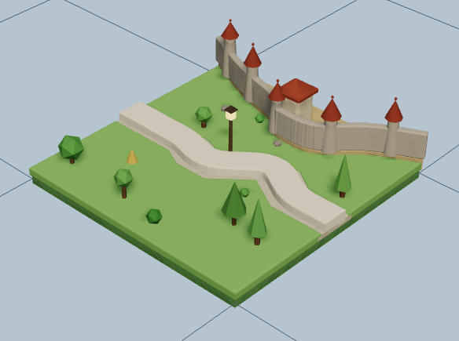

Digitale Umsetzung des Basisspiels als Electron-Desktop-App —
agile Entwicklung, automatisierte Qualitätssicherung, mehrstufiges Deployment.
React + TypeScriptElectronVitev0.6.0
Stand 21.06.2026 · Team Carcassonne ·
Single Source of Truth: Notion

Projektkontext
Ziel: das vollständige Basisspiel — digital
Produkt
Vollständige Spiellogik: Kachelplatzierung mit Regelvalidierung,
Feature-Graphen (Stadt, Straße, Kloster, Feld), Meeple-Besitz sowie
Zwischen- und Endwertung.
Plattform
Electron-Desktop-App (Windows priorisiert), gerendert mit React.
Die Core-Logik ist bewusst framework-unabhängig in
TypeScript gehalten.
Rahmen
Studienprojekt mit festen Stakeholder-Meilensteinen und
Abgabetermin 15.06.2026. Steuerung über Notion-Arbeitspakete.
Architektur (strikt)
Vier getrennte Schichten ohne Vermischung von Verantwortlichkeiten:
Core (Spiellogik) → Controller (Spielfluss) →
UI (React, nur Rendering) → Electron (App-Lebenszyklus).
Vorgehensmodell
Agil gearbeitet — kein klassisches Lasten-/Pflichtenheft
Das Projekt wurde durchgängig iterativ und inkrementell
umgesetzt. Anstelle eines vorab festgeschriebenen Lasten- und
Pflichtenhefts diente ein lebender, priorisierter Arbeitsvorrat als
funktionales Äquivalent.
User Stories / Arbeitspakete — Lösungsdetail statt Pflichtenheft
Feedbackzyklen — Stakeholder-Meetings als Abnahmepunkte
Klassisch nicht genutzt
Lastenheft → Pflichtenheft → Big-Bang-Umsetzung.
Anforderungen früh eingefroren, Feedback erst am Ende.
Agil gelebt
Backlog → User Stories → Inkrement → Feedback → Anpassung.
Anforderungen entwickeln sich mit jedem Zyklus weiter.
Werkzeuge
Arbeitspakete werden in Notion geplant, verwaltet und aufgeteilt
(verbindliche Single Source of Truth). Bugs und Problemfälle laufen über
GitHub Issues.
Projektfluss
Der iterative Zyklus
Jede Iteration durchläuft denselben Zyklus — Ergebnis
und Feedback fließen direkt in den nächsten Durchlauf zurück.
Wofür: Anforderungen aus Nutzersicht, klein
geschnitten und schätzbar. Ersetzt: Teile des
Pflichtenhefts — das „Wie" entsteht pro Story.
Arbeitspakete
Wofür: Umsetzungseinheiten mit
Akzeptanzkriterien & Status (MH-/EW-/QS-IDs). Status: Offen → In Bearbeitung → Review → Erledigt.
Feedbackzyklen
Wofür: 4 Stakeholder-Meetings als
verbindliche Meilensteine & Abnahmepunkte. Ergebnis: Re-Priorisierung des Backlogs.
Notion ↔ Git
Tagging ist notion-gesteuert: Sind alle Tasks mit demselben
Release-Tag auf Erledigt, wird der
zugehörige Git-Tag gesetzt. Notion und Git spiegeln jederzeit denselben
Projektstatus.
Qualitätssicherung
Mehrschichtige Teststrategie
Unit (Vitest) — Core-Logik, Ziel ≥ 95 % Lines / ≥ 90 % Branches
10 Szenarien · Katalog in
tests/scenarios/README.md
Deployment · Umgebungen
Von der Vorstufe in die Produktion
Trigger Staging
Pull Request gegen main baut & deployt in die Vorstufe.
Trigger Production
Push / Merge auf main deployt live (SSH + PM2-Restart, rsync --delete).
Workflow
Definiert in .github/workflows/deploy.yml.
Umfang · Kern
Key-Implementierungen
Meeple-System Kern
Meeples leben am Feature.meeples,
nicht auf Tiles. Vollständige Logik: gültige Zielsegmente ermitteln,
Platzierung mit Besitz, automatische Rückgabe bei Feature-Abschluss,
Mehrheitswertung (2:1).
Spezifikation: specs/09_meeples.md
Kachel & Regeln
Platzierung mit Kanten-Validierung, Rotation,
Feature-Graphen mit Merge/Union-Logik.
Wertung
Zwischenwertung bei Abschluss + Endabrechnung
inkl. Farmer & Schildbonus.
Spielfluss
Hot-Seat 2–5 Spieler, Phasen, Spielende mit
reproduzierbarer Endabrechnung.
Kernrelevant
Korrektes Feature-Merging, korrekte Wertung und ein sauberes,
framework-freies Datenmodell stehen im Fokus — nicht UI-Komplexität.
Umfang · Erweiterungen
Optionale Implementierungen & Ausblick
Netzwerk-Multiplayer EW-01
WebSocket-/LAN-Mehrspieler mit Spielsynchronisation über
den Game-Server (Port 3001). Spielcode zum Beitreten.
3D-Board optional
Räumliche Brett-Darstellung mit
three.js / react-three-fiber
(src/three) als visuelle Aufwertung.
Intelligenter AI-Agent EW-02
LLM-gestützte Zugevaluierung über eine
OpenAI-kompatible API + MCP-Analyse-Tools; Fallback auf Heuristik.
Kern vs. Erweiterung
Kernrelevant ist die regelkonforme Spiellogik (Kacheln, Features, Meeples,
Wertung). Multiplayer, 3D und der AI-Agent sind Erweiterungen
bzw. Ausblick.
AI-Modi im Spiel
Mensch · Zufalls-KI · Heuristik-KI (ohne Key) ·
Reasoning-KI (LLM). Ohne API-Key fällt die Reasoning-KI automatisch
auf die Heuristik zurück — kein Absturz.
Architekturentscheidung · AI-Anbindung
Chat-AI Access Token (GWDG) statt OpenRouter
Für die AI-Anbindung wurde ein
Chat-AI Access Token über GWDG (OpenAI-kompatibler
Endpoint) verwendet — anstelle einer OpenRouter-Integration.
Konfiguration über VITE_AI_BASE_URL +
VITE_AI_API_KEY
Custom-Endpoint hat im Code Vorrang vor OpenRouter
OpenAI-kompatibel → derselbe Client-Pfad, austauschbares Modell
Robust: Timeout/fehlender Key → Fallback auf Heuristik
gewählt
GWDG Chat-AI
Access Token · OpenAI-kompatibel
nicht genutzt
OpenRouter
Option B im Code vorhanden
Beleg im RepoREADME.md · .env.example ·
src/ai/intelligent.ts — Custom-Endpoint mit Vorrang,
OpenRouter als Alternativpfad.
Hinweis: Die konkrete GWDG-Benennung folgt der
Projektvorgabe; im Repository belegt ist ein OpenAI-kompatibler
Custom-Endpoint mit Vorrang gegenüber OpenRouter.
Fazit
Projekterkenntnisse
Prozess
Agiler Backlog + Feedbackzyklen ersetzten Lasten-/Pflichtenheft
vollwertig — bei klarer Steuerung über Notion.
Qualität
Mehrschichtige Tests + YAML-Szenarien in CI sicherten
Regelkonformität reproduzierbar ab.
Technik
Saubere Schichtentrennung, mehrstufiges Deployment und
eine austauschbare AI-Anbindung.
Kernbotschaft
Korrektes Feature-Merging, korrekte Wertung und ein sauberes Datenmodell
bilden den stabilen Kern — Multiplayer, 3D und AI-Agent erweitern ihn.